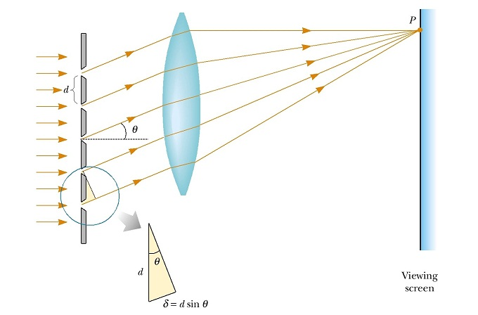
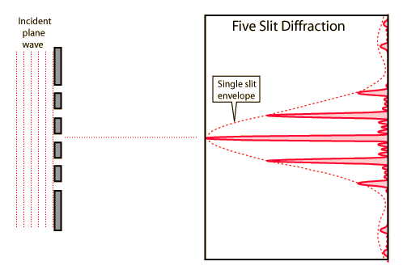
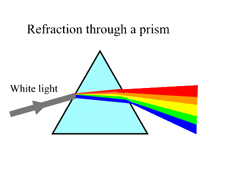

Interference: Superposition of waves from a finite number of "point" sources.
Diffraction: Superposition of waves from an infinite number of "point" sources, comprising a single large source.
The diagram at right illustrates a 5 slit configuration, where the path difference at point P between waves from each of the slits is dsinθ with a slit separation of "d". Clearly, if the waves from all five slits are in phase, maximum intensity will be observed at P when

where n = 0, 1, 2,...
where β is the same β as in the single slit diffraction and
Note that this pattern is comprised of a diffraction envelope together with the (sin2Nγ)/sin2γ term. This latter term leads to the existence of principal maxima predicted by dsinθ = nλ together with much weaker secondary maxima between the principal maxima as shown below for a five slit example.

DIFFRACTION GRATINGS
Depending on the value of "d" the various "orders" may overlap. In other words red light (long wavelength) in the first order (n=1) could have the same value of θ as blue light (smaller wavelength) in the second order (n=2).

Dr. C. L. Davis
Physics Department
University of Louisville
email: c.l.davis@louisville.edu